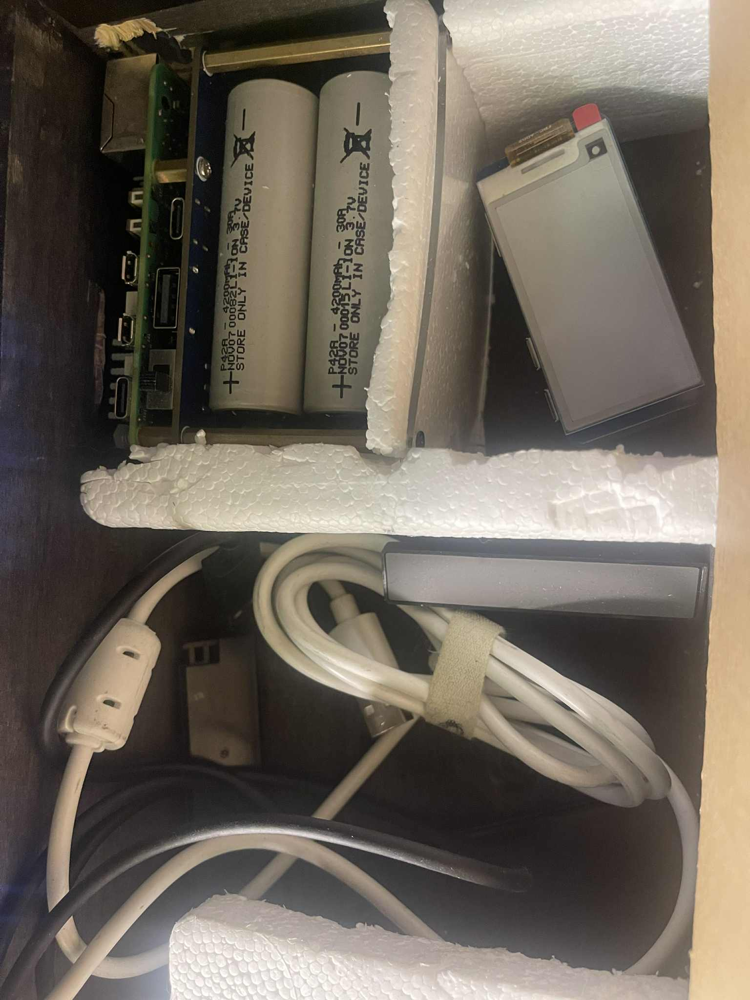

Retro Typewriter Cyberdeck
Máy tính di động tự lắp ráp sử dụng Raspberry Pi 5
Thời gian thực hiện Mùa đông 2024–2025, London, Vương quốc Anh
Mã nguồn và tài liệu GitHub
Tổng quan
Retro Typewriter Cyberdeck là dự án máy tính di động tự lắp ráp dựa trên Raspberry Pi 5, sử dụng một hộp gỗ trang trí kiểu cổ điển làm vỏ thiết bị. Dự án được thiết kế và hoàn thiện tại London trong mùa đông 2024–2025, với mục tiêu tạo ra một máy tính chạy Linux có thể mang theo và sử dụng bằng nguồn pin độc lập.
Thiết bị kết hợp máy tính, màn hình, nguồn điện dự phòng và kết nối mạng trong một hộp gỗ nhỏ gọn. Bàn phím cơ kết nối qua USB được bố trí trên phần đế khi sử dụng. Ngoài các tác vụ viết, nghiên cứu và làm việc với dòng lệnh, hệ thống còn có một mô-đun Pwnagotchi hoạt động độc lập phục vụ quan sát mạng không dây 802.11 ở chế độ thụ động.
Dự án ưu tiên việc tận dụng linh kiện thương mại và vật liệu sẵn có, không sử dụng in 3D hoặc gia công CNC cho phần vỏ.


Thiết kế phần cứng
Bộ xử lý và hệ điều hành
Hệ thống sử dụng Raspberry Pi 5 với 4 GB RAM, chạy Ubuntu 24.04 LTS. Đây là nền tảng xử lý chính cho các tác vụ thông thường trên Linux, đặc biệt là soạn thảo, tra cứu và sử dụng dòng lệnh. Bộ tản nhiệt chủ động chính hãng Raspberry Pi được lắp trực tiếp trên bo mạch.
Nguồn điện
Waveshare UPS HAT (E) cung cấp nguồn 5 V, tối đa 6 A cho Raspberry Pi 5 thông qua đầu nối của mô-đun. Nguồn dự phòng sử dụng hai cell lithium-ion 18650, mỗi cell được ghi theo cấu hình dự án là 4.200 mAh ở điện áp danh định 3,7 V, tương đương khoảng 31 Wh tổng năng lượng danh định.
Mô-đun hỗ trợ sạc qua USB-C trong khi hệ thống tiếp tục hoạt động. Việc đọc phần trăm pin qua giao tiếp I²C trên Ubuntu vẫn chưa ổn định, do đó đây chưa phải chức năng được hoàn thiện trong bản lắp ráp hiện tại.
Màn hình và bàn phím
Màn hình IPS GeeekPi 7 inch, độ phân giải 1024 × 600 ở 60 Hz, được gắn vào mặt trong của nắp hộp. Cáp Micro HDMI dạng xoắn đi qua khoảng hở gần bản lề để kết nối màn hình với bo mạch.
Bàn phím cơ IDOBAO ID42 bố cục 40%, hỗ trợ thay switch và sử dụng Kailh Box Navy cùng bộ phím màu trắng. Bàn phím kết nối qua USB và được đặt trên phần đế khi thiết bị mở ra để làm việc.
Kết nối mạng và mô-đun phụ
Raspberry Pi sử dụng kết nối không dây tích hợp, kết hợp một bộ chuyển đổi Wi-Fi qua USB. Mô-đun Pwnagotchi có màn hình mực điện tử 2,13 inch và hoạt động độc lập với hệ điều hành chính. Thành phần này được bố trí như một hệ thống phụ dành cho nghiên cứu, quan sát mạng 802.11 thụ động trong môi trường được phép.
Kết cấu vỏ
Vỏ thiết bị được tận dụng từ hộp gỗ trang trí có khóa, kích thước xấp xỉ 30 × 15 × 12 cm. Khoang phía trên chứa Raspberry Pi, mô-đun cấp nguồn và pin; các miếng xốp được cắt thủ công để cố định linh kiện trong quá trình di chuyển. Khoang còn lại dành cho cáp và phụ kiện.
Thiết kế không yêu cầu vỏ in 3D hoặc các chi tiết gia công theo bản vẽ. Đổi lại, kích thước hộp và đường đi dây tạo ra một số giới hạn về việc đóng nắp và lưu thông không khí.

Danh sách linh kiện
| Thành phần | Cấu hình | Chi phí ghi nhận |
|---|---|---|
| Máy tính đơn bo | Raspberry Pi 5, 4 GB | £143.00 |
| Màn hình | GeeekPi IPS 7 inch, 1024 × 600, 60 Hz | £44.99 |
| Bộ cấp nguồn dự phòng | Waveshare UPS HAT (E), 5 V/6 A | £39.99 |
| Tản nhiệt | Raspberry Pi Active Cooler | £9.56 |
| Cáp hình ảnh | Micro HDMI sang HDMI dạng xoắn | $3.97 |
| Dây nối trong hộp | Bộ cáp mềm HOQO FFC | $10.05 |
| Vỏ thiết bị | Hộp gỗ trang trí khoảng 30 × 15 × 12 cm | $4.77 |
| Bàn phím | IDOBAO ID42 40%, Kailh Box Navy | £18.87 |
| Pin | 2 cell lithium-ion 18650 | Chưa xác định |
Chi phí linh kiện đã ghi nhận khoảng £256.41 và $18.79, chưa bao gồm pin. Đây là giá mua được lưu trong tài liệu dự án, không phải báo giá hiện hành.
Giới hạn của bản lắp ráp
Bản hiện tại đã đáp ứng mục tiêu vận hành bằng pin và cung cấp một môi trường làm việc Linux di động. Tuy nhiên, một số hạn chế phần cứng vẫn còn tồn tại.
| Vấn đề | Tình trạng |
|---|---|
| Đọc phần trăm pin qua I²C trên Ubuntu | Chưa ổn định |
| Đóng nắp hộp | Cần tháo bớt kết nối cáp do giới hạn không gian |
| Thông gió của vỏ | Sử dụng khe thoát khí phía sau, có thể giảm xung nhịp khi tải CPU cao kéo dài |
Dù Raspberry Pi có bộ tản nhiệt chủ động riêng, vỏ gỗ chưa có quạt thông gió chuyên dụng. Vì vậy, thiết bị phù hợp hơn với các tác vụ nhẹ và trung bình so với những công việc yêu cầu CPU chạy ở tải cao trong thời gian dài.

Kết quả và phạm vi sử dụng
Retro Typewriter Cyberdeck là bản thử nghiệm phần cứng mang tính cá nhân, kết hợp nền tảng máy tính đơn bo với thiết kế vỏ tái sử dụng. Cấu hình hướng đến các công việc như viết, nghiên cứu và thao tác trong môi trường dòng lệnh, đồng thời dành không gian cho những mô-đun điện tử phụ trợ.
Dự án cho thấy khả năng xây dựng một máy tính Linux có nguồn pin từ các linh kiện phổ biến mà không cần quy trình gia công vỏ chuyên dụng. Những giới hạn về dây nối, thông gió và theo dõi pin cũng là các vấn đề cần tiếp tục xử lý nếu phát triển sang phiên bản hoàn thiện hơn.

Liên kết và tài nguyên
| Kho mã nguồn | github.com/letrinhandn/retro-typewriter-cyberdeck |
| Tài liệu dự án | README và hình ảnh |
| Giấy phép | MIT |
A portable Raspberry Pi 5 computer built from off-the-shelf hardware
Build period Winter 2024–2025, London, United Kingdom
Repository GitHub
Overview
Retro Typewriter Cyberdeck is a custom portable computer built around a Raspberry Pi 5 and housed in a repurposed vintage-style wooden chest. Designed and assembled in London during the winter of 2024–2025, the project explores a battery-powered Linux workstation that can be transported and used without a continuous connection to mains power.
The build brings computing hardware, a display, backup power, and network connectivity into a compact case. A USB mechanical keyboard is positioned on the base during operation. Alongside writing, research, and terminal work, a separate Pwnagotchi module supports passive observation of 802.11 wireless networks.
The enclosure is made from readily available parts and materials, without 3D printing or CNC machining.
Hardware Design
Computing Platform
The main system uses a Raspberry Pi 5 with 4 GB of RAM running Ubuntu 24.04 LTS. It provides a general-purpose Linux environment for writing, research, and command-line tasks. An official Raspberry Pi Active Cooler is installed on the board.
Power System
A Waveshare UPS HAT (E) supplies the Raspberry Pi with 5 V at up to 6 A. The battery assembly consists of two 18650 lithium-ion cells, listed in the project specification at 4,200 mAh and 3.7 V each. This corresponds to approximately 31 Wh of combined nominal energy.
The UPS module supports USB-C charging while the computer remains operational. Battery percentage reporting over I²C is not yet reliable under Ubuntu and remains an unresolved limitation of the current build.
Display and Keyboard
A 7-inch GeeekPi IPS display, operating at 1024 × 600 and 60 Hz, is mounted inside the lid. A coiled Micro HDMI cable passes near the hinge to connect the panel to the main board.
Input is provided by an IDOBAO ID42 40% hot-swappable mechanical keyboard with Kailh Box Navy switches and white keycaps. It connects over USB and sits on the base when the device is opened for use.
Networking and Auxiliary Module
The Raspberry Pi uses its integrated wireless interface alongside a secondary USB Wi-Fi adapter. A Pwnagotchi module with a 2.13-inch e-ink display operates independently of the main Linux system. It serves as an auxiliary platform for passive 802.11 observation in authorized environments.
Enclosure and Internal Layout
The enclosure is a repurposed decorative wooden chest measuring approximately 30 × 15 × 12 cm. The upper compartment holds the Raspberry Pi, power module, and battery cells, with hand-cut foam dividers used to keep the components in place. The remaining compartment provides storage for cables and accessories.
This approach avoids a custom-manufactured housing, but the dimensions of the chest impose practical constraints on cable routing, lid closure, and airflow.
Bill of Materials
| Component | Specification | Recorded cost |
|---|---|---|
| Single-board computer | Raspberry Pi 5, 4 GB | £143.00 |
| Display | GeeekPi 7-inch IPS, 1024 × 600, 60 Hz | £44.99 |
| Uninterruptible power module | Waveshare UPS HAT (E), 5 V/6 A | £39.99 |
| Cooling | Raspberry Pi Active Cooler | £9.56 |
| Display cable | Coiled Micro HDMI to HDMI | $3.97 |
| Internal wiring | HOQO FFC cable kit | $10.05 |
| Enclosure | Decorative wooden chest, approximately 30 × 15 × 12 cm | $4.77 |
| Keyboard | IDOBAO ID42 40%, Kailh Box Navy | £18.87 |
| Battery cells | Two 18650 lithium-ion cells | Not recorded |
Recorded component total approximately £256.41 plus $18.79, excluding the batteries. These figures reflect the project’s documented purchases rather than current retail pricing.
Known Limitations
The current build demonstrates battery-backed operation and a portable Linux working environment. Several mechanical and system-level limitations remain.
| Issue | Status |
|---|---|
| Battery percentage reporting over I²C on Ubuntu | Unreliable |
| Closing the lid | Requires partial cable disconnection due to limited clearance |
| Enclosure ventilation | Relies on a rear gap and may lead to CPU throttling under sustained heavy load |
Although the Raspberry Pi has its own active cooler, the wooden enclosure has no dedicated ventilation fan. The system is therefore better suited to light and moderate workloads than prolonged CPU-intensive tasks.
Project Scope
Retro Typewriter Cyberdeck is a personal hardware prototype combining a single-board computer with a repurposed enclosure. Its primary uses are writing, research, and terminal-based work, with room for separate electronic modules and accessories.
The project demonstrates how a battery-powered Linux computer can be assembled from commonly available components without custom enclosure fabrication. Cable management, cooling, and battery monitoring remain the main areas for refinement in a subsequent revision.
Links and Resources
| Repository | github.com/letrinhandn/retro-typewriter-cyberdeck |
| Project Documentation | README and photos |
| License | MIT |